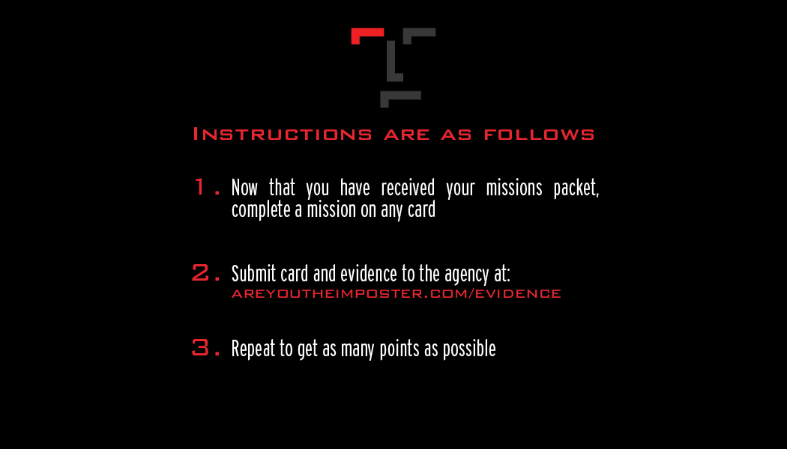
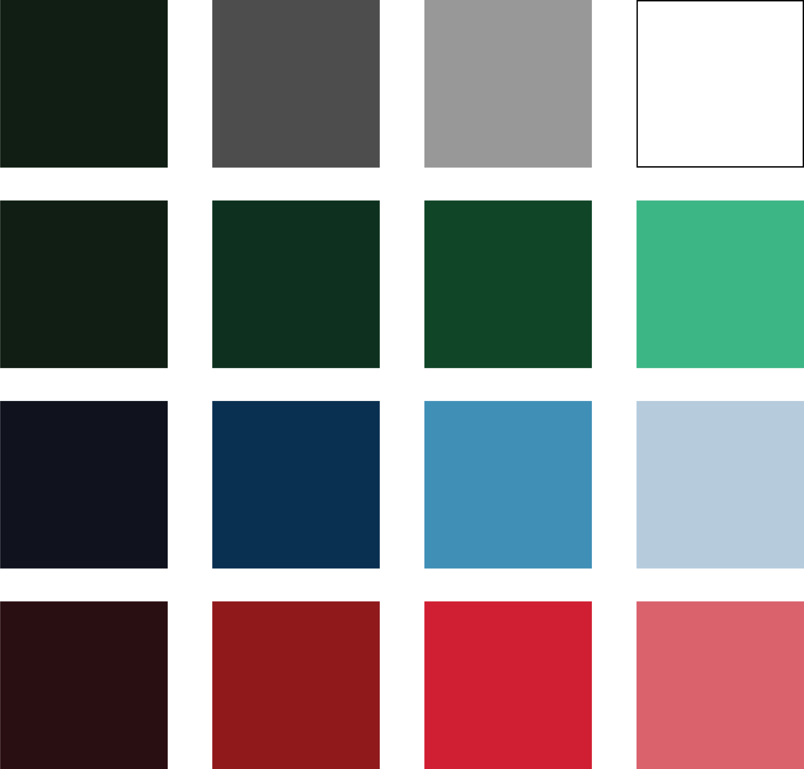
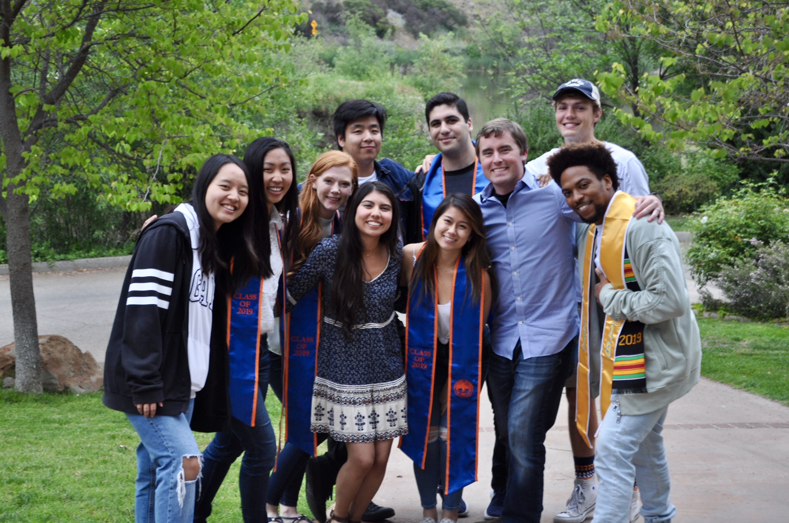
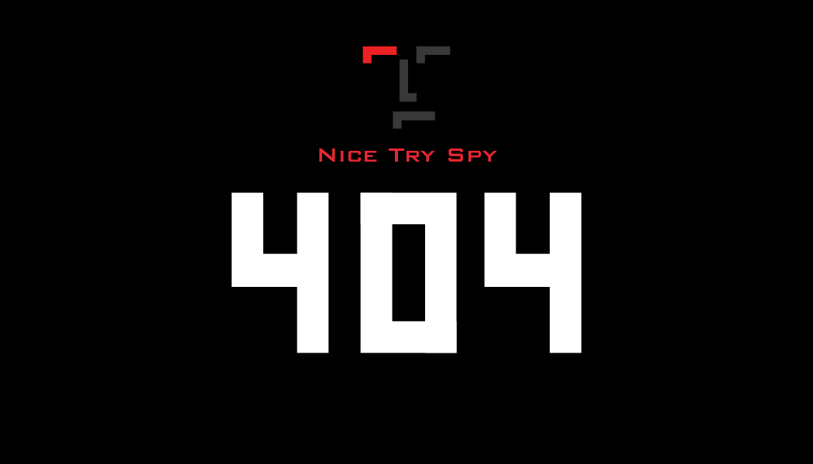

Spring 2019
Imposter
Genesis Lab Game
Imposter is a spy themed card game designed to help students who feel lonely on campus find activities that will introduce them to people and places they might not know about otherwise. Although people at Pepperdine look like they have every minute of their day together, everyone is in the same boat trying to figure out this new experience called college. Imposter stems from looking at people and seeing someone they are not.
How to Play
In order to be inducted into The Agency, people call a phone number hidden on campus and receive their mission packet. Inside the pack there are a variety of cards with challenges, varying in difficulty as people become more involved with the game. Players accrue points by completing the tasks on the card and upload the evidence of their accomplishments to a leaderboard. The top five players get to participate in an experience that caters to their interests. We wanted to shy away from monetary prizes because the end goal of the game was not to get things, but to enjoy and experience everything that Pepperdine, Malibu, and LA have to offer.
Starter Pack
Initiation
Inside the initiation packet, there are nine cards plus the initiation card. These packets are hidden on campus and players are given a clue to find it.
Cards
Assassins

As the name implies, assassin cards allow you to eliminate other players. They do not permanently remove the other player from the game, but they do suspend their points for a week, which takes them out of the running for the weekly prize. However, the points earned during the week they were suspended are added to the next week and can be turned into a strategy.
Explorers
Explorer cards allow you to earn points by completing tasks like geocaching, experiential tasks (eating scary/abnormal food), attending campus rec events, and attending in-game events. These cards are targeted at people who enjoy experiencing new things, but might not know how to find some of the great things Malibu and LA have to offer.
Fabricators
Fabricator cards involve puzzles, decoding, and creating. These are for inventive people who like making, thinking, and learning new skills.
Branding
Logo
Design style: Since our game was spy themed, we wanted to create an element of intrigue and mystique in our design. We looked at one of the most famous spies, James Bond and the 50’s time period. We combined late modern era design and the popular trend of flat style.
Wordmark
The logotype is created in the same way as the logo. The only change is that the descender is one unit longer than the regular logo to create enough space for each character. Proportions are now 2 units by 5 units. Space between each character is ½ of a unit.
Visual Identity Guide: Do
The logo was fun because it was simple enough to do anything we wanted with it. It looks a bit like a little man, but we could also create custom lettering out of it. The logo is made with a square grid. Each piece of the logo is identical with the proportions of 4 units by 2 units.
Visual Identity Guide: Don't
Don't change proportions of the rectangles
Don't have different proportions of the rectangles

Don't change space between each of the rectangles
Don't have any lines that are not vertical and horizontal
Colors
Black, white, and red are the main colors for the logo. The rest of the art is done in monochromatic color schemes that fit the usecase
Marketing Use

The most successful aspect of Imposter was the intrigue we built into our marketing. We knew from the start that we needed to find a way to get people to register other than adding our posters to the sea of promotional materials lining the walls of the Pepperdine Plaza. We also wanted to find a way for it to fit the theme, which helped us come up with our marketing materials. We came up with ideas like painting the rock with reflective paint and having people take a picture with the flash to find the secret phone number, business cards with a puzzle to solve, fortune cookies with custom riddles inside, a few posters in specific buildings, and quite a few more that we did not end up using. Within the first day we got five calls and by the end of the first week we had almost 50 registered.
Contributors
Although I was one of the leads on Imposter, (creating the concept, details, and art), there was an entire team of amazing people who worked with me at the Genesis Lab. Landon Phillips, my supervisor and mentor, Chanse Alexander, who created sketches to be vectorized and assisted with colors and concepts for the cards. Esther Wong was our computer science expert. Genesis Trejo, the pre-med student and temporary lawyer, Isabel Hao, and Russell Wijaya who lost many nights of sleep while finishing up details on projects with fast approaching deadlines. Thank you to Christine Deng, the other lead on the project, Anna Speth co-director of the Genesis Lab, and the rest of the team: Alex Ksajikian, Treet Allison, and Jane Yi, who did everything else in the Genesis Lab while we obsessed over this game!
Bloopers
During Imposter we ran into a few bumps in the road. The first problem we ran into was when we got a nice visit from Public Safety. They told us that in order to have these materials distributed throughout campus, we needed to have official documentation saying that it was affiliated with an on campus organization or program. They were justified in their concern, if someone made their way on campus and was asking students in a voicemail to leave their name, phone number, email, mailbox number, and mother’s maiden name (not actually), then that would be a potential threat to the community. However, our fear was that if we used logos from the makerspace, library, or the university then we would be seen as just another event that might alienate the people we were trying to engage. By the time they shutdown this first part of our operation, we had plenty of people to start the pilot.
The second problem we ran into was Google thinking we were sending out spam from our number. One day we were sending out messages to our registered “agents”. After we got through about thirty texts, the number was cut off. We couldn’t log in, check messages we were receiving, or finish sending out the invite to a weekend event. A few days later, Genesis Trejo, a pre-med student turned temporary lawyer, found a loophole in the Google Voice terms and services and got our number back in action. In case we didn’t get our number back, we prepared to get a new number or send out mass messages through email.